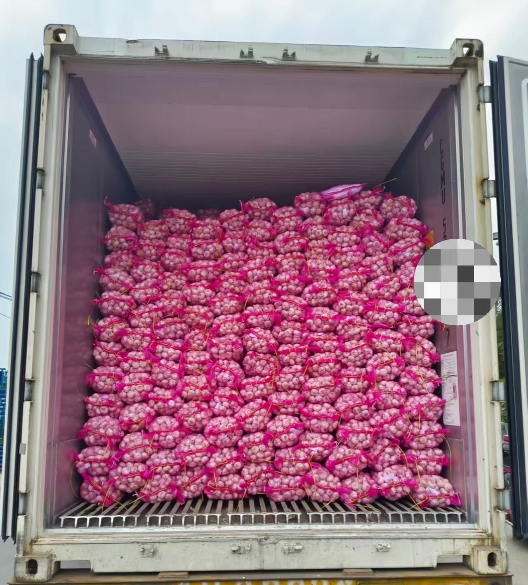

Quick Answer: A 40HQ reefer container holds approximately 28MT of Normal White Garlic in 10kg mesh bags, or 25-26MT in cartons. Pure White Garlic loads 26-28MT depending on packaging. The reefer must be set to -2°C to -3°C with 25 CBM/h ventilation for optimal garlic preservation during ocean freight.

40HQ Reefer Container Specifications
The 40-foot High Cube (40HQ) reefer container is the preferred choice for garlic exporters shipping large volumes over long distances. Its extra height compared to a standard 40' container provides additional headroom for cold air circulation, which is critical for maintaining garlic quality during voyages of 25-40 days to Africa, South America, or the Middle East.
The key advantage of the 40HQ over a standard 40' container is the extra 30 cm of height (2.69 m vs 2.39 m). While this may seem minor, it allows for an additional layer of mesh bags or cartons, and more importantly, provides a larger air gap between the top of the cargo and the container ceiling. This gap is essential for the reefer's evaporator fan to circulate cold air evenly across the entire cargo load.
Garlic Loading Capacity by Packaging Type
The packaging type directly affects how much garlic you can fit in a 40HQ container. Mesh bags allow for higher payload because they conform to the container shape and eliminate wasted space. Cartons, while offering better protection and easier handling, occupy more volume due to their rigid structure and stacking limitations.
Why Pure White loads less: Pure White Garlic bulbs are typically denser and slightly heavier per unit volume. When packed in the same size mesh bags or cartons, fewer bulbs fit per bag, resulting in 2-3MT less total payload compared to Normal White Garlic in the same container.
Container Loading Step-by-Step
Proper loading is critical to maximize capacity while ensuring garlic quality is preserved throughout the voyage. ExCrop follows a standardized 7-step loading protocol at Qingdao Port for every 40HQ reefer shipment.
Step 1: Container Pre-Cooling
The reefer container must be pre-cooled to the target temperature of -2°C to -3°C for at least 2-4 hours before loading begins. This ensures the container walls, floor, and air ducts are at the correct temperature, preventing thermal shock to the garlic when it enters the container. Pre-cooling should be done with the doors closed and the reefer unit running.
Step 2: Container Inspection
- Verify the container is clean, dry, and odor-free
- Check for structural damage to walls, floor, or doors
- Confirm door seals are intact and close tightly
- Verify the reefer unit is functioning and maintaining set temperature
- Check that floor T-bar rails are clean and unobstructed for airflow
Step 3: Floor Preparation
Lay kraft paper or perforated floor liner along the T-bar floor rails. This helps distribute weight evenly and prevents small debris from blocking the air channels. Never use solid plastic sheeting on the floor — it will block the refrigerated airflow from the under-floor ducts.
Step 4: Loading and Stacking
For mesh bag loading, use the cross-stacking method: place bags in rows along the container length, then rotate each subsequent layer 90 degrees. This interlocking pattern prevents shifting during transit. Stack 5-7 layers high depending on bag size, maintaining a 10-15 cm gap from the ceiling for cold air circulation.
For carton loading, stack cartons in columns with each layer aligned vertically. Use corner boards between every 3rd layer to distribute weight and prevent crushing of lower cartons. Cartons should be loaded tightly side-to-side with minimal gaps, but a gap must be maintained at the top and along the doors for airflow.
Step 5: Airflow Verification
Before closing the doors, verify that there is a clear air path from the evaporator fan (front of container) to the door end. The top 10-15 cm of the container must be free of cargo. Use a loading chute or cargo restraint net at the door end if needed to prevent bags from falling when doors are opened at destination.
Step 6: Temperature and Ventilation Settings
- Set temperature: -2°C to -3°C (garlic dormancy zone)
- Ventilation: 25 CBM/h (fresh air exchange to remove ethylene and CO₂)
- Relative humidity: 65-70% (managed automatically by the reefer unit)
- Defrost cycle: automatic (typically every 6-8 hours)
Step 7: Sealing and Documentation
Close the container doors, verify the reefer is running at set temperature, apply the container seal, and record the seal number on the loading report. Take photos of the loaded container interior (before closing doors), the seal, and the reefer temperature display. The entire loading process for a 40HQ takes approximately 4-5 hours with a 4-5 person team.
20'GP vs 40HQ: Which Container Should You Choose?
The choice between a 20'GP and a 40HQ container depends on your order volume, destination, and budget. For garlic export from China, both container types are commonly used, but they serve different purposes.
Cost Tip: For destinations in Africa, South America, and the Middle East, the per-metric-ton freight cost of a 40HQ is typically 30-40% lower than a 20'GP because the ocean freight rate for a 40HQ is only 1.5-1.7x that of a 20'GP, while carrying roughly the same weight. If your order volume exceeds 20MT, always choose a 40HQ reefer for maximum cost efficiency.
Ventilation Requirements for Garlic in Reefer Containers
Garlic is a living product that continues to respire after harvest. During respiration, it consumes oxygen and releases carbon dioxide, water vapor, and heat. Without adequate ventilation, CO₂ accumulates to dangerous levels, moisture condenses on the container ceiling and falls back onto the garlic, and the temperature becomes uneven across the cargo load.
The reefer container's fresh air ventilation system replaces the internal air with outside air. For garlic, the recommended ventilation rate is 25 CBM/h. This setting provides sufficient air exchange to remove respiratory gases and excess moisture while maintaining the cold chain temperature. The ventilation vents should be set to this rate before the container is sealed.
Equally important is the internal airflow pattern. The T-bar floor rails channel cold air from the evaporator fan under the cargo, while warm air rises and returns through the top gap. This is why maintaining a 10-15 cm clearance above the cargo is non-negotiable — blocking this gap will cause the reefer unit to short-cycle, leading to temperature fluctuations and potential quality damage.
Common Loading Mistakes to Avoid
- Overloading beyond the payload limit: The 40HQ reefer has a maximum payload of approximately 28-29MT. Exceeding this risks container damage, customs issues, and denial of vessel loading.
- Blocking the ceiling air gap: Stacking cargo all the way to the roof prevents airflow, causing hot spots and condensation that lead to mold and rot.
- Skipping pre-cooling: Loading garlic into a warm container raises the product temperature, and the reefer may take 12-24 hours to pull it back down — during which quality deteriorates.
- Using solid plastic floor liners: These block the T-bar air channels, cutting off under-floor airflow entirely. Always use perforated liners or kraft paper.
- Loading wet garlic: Garlic must be properly cured and surface-dry before loading. Moisture on the skins creates condensation inside the container, even with proper ventilation.

ExCrop Loading Standards
At ExCrop, we load every 40HQ reefer container at Qingdao Port following a documented quality protocol. Our standard MOQ is 1 x 40HQ Reefer Container (28MT). Each loading is supervised by our quality control team, and we provide customers with a complete loading report including:
- Container number and seal number
- Pre-loading quality inspection photos (size, appearance, moisture)
- Reefer temperature setting confirmation photo (-2°C to -3°C)
- Loading process photos at 25%, 50%, 75%, and 100% completion
- Final sealed container photo with seal number visible
- Packing list and weight confirmation
This documentation protects both the buyer and the seller, and serves as critical evidence in case of any insurance claims or quality disputes at destination.
Frequently Asked Questions
Planning a Garlic Shipment?
Get expert advice on container selection, loading capacity, and cold chain logistics. ExCrop ships from Qingdao Port to 50+ countries worldwide.
WhatsApp Us Get a Quote